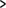

16. Llistes HTML
Ben Buchanan. 8 de juliol del 2008. Publicat a: definició, ordenat, desordenat, xhtml, html
Les llistes es fan servir per a agrupar dades relacionades per tal que quedin clarament associades entre elles i siguin fàcils de llegir. En el desenvolupament dels webs modernes, les llistes són uns elements molt habituals que es fan servir tant per a la navegació com per al contingut general.
Les llistes són molt adequades des d'un punt de vista estructural, ja que ajuden a crear un document ben estructurat, més accessible i fàcil de mantenir. També són útils per una raó purament pràctica: aporten elements addicionals als quals adjuntar estils del CSS i disposar així d'una gran varietat d'estils (més endavant en aquest curs ja parlarem del CSS; per a saber quins són els apartats sobre el CSS que hi ha disponibles, consulteu l'índex de continguts).
En aquest apartat explicaré els diferents tipus de llistes disponibles en l'HTML, quan i com s'han d'utilitzar i com aplicar alguns estils bàsics. El contingut és el següent (guaita tu! És una llista!):
Els continguts d'aquest apartat són els següents:
- 16.1. Els tres tipus de llistes
- 16.1.1. Llistes no ordenades
- 16.1.2. Etiquetatge de llistes no ordenades
- 16.1.3. Llistes ordenades
- 16.1.4. Etiquetatge de llistes ordenades
- 16.1.5. Començar llistes ordenades amb un número diferent d'1
- 16.1.6. Llistes de definicions
- 16.2. Escollir entre tipus de llistes
- 16.3. La diferència entre llistes HTML i text
- 16.4. Imbricar llistes
- 16.5. Exemple pas a pas
- 16.5.1. Etiquetatge de la pàgina principal
- 16.5.2. Afegir alguns estils
- 16.5.3. La pàgina de la recepta
- 16.5.4. Etiquetatge de la pàgina de la recepta
- 16.5.5. Estils de la pàgina de la recepta
- Resum
- Preguntes de repàs
- Lectures complementàries
16.1. Els tres tipus de llistes
En l'HTML hi ha tres tipus de llistes:
llista no ordenada: es fa servir per a agrupar elements relacionats sense cap ordre en concret.
llista ordenada: es fa servir per a agrupar elements relacionats en un ordre concret.
llista de definicions: es fa servir per a mostrar parelles de noms i valors, com per exemple termes i les seves definicions o hores i actes.
Cadascuna d'aquestes llistes té una finalitat i un significat específics i no són intercanviables.
16.1.1. Llistes no ordenades
Les llistes no ordenades, o llistes de pics, s'utilitzen quan tenim una sèrie d'elements que es poden col·locar en qualsevol ordre.
La llista de la compra
Un exemple podria ser una llista de la compra:
llet
pa
mantega
cafè
Tots aquests elements formen part d'una llista, però es poden posar en qualsevol ordre sense que la llista perdi el seu sentit:
pa
cafè
llet
mantega
Es pot fer servir el CSS per a canviar el pic a un dels diversos estils per defecte, podeu fer servir una imatge pròpia o fins i tot es poden fer llistes sense pics; més endavant en aquest mateix apartat veurem com fer-ho i en altres apartats sobre el CSS ho explicarem amb més detall. Si ho trobeu una mica confús no cal que ara us preocupeu pel CSS; ja ho aclarirem tot plegat més endavant, a Estils de llistes i enllaços.
16.1.2. Etiquetatge de llistes desordenades
Les llistes desordenades utilitzen les etiquetes <ul></ul> i dintre d'aquestes hi ha molt grups de <li></li>.
<ul>
<li>pa</li>
<li>cafè</li>
<li>llet</li>
<li>mantega</li>
</ul>16.1.3. Llistes ordenades
Les llistes ordenades, o llistes numerades, s'utilitzen quan tenim una sèrie d'elements que s'han de col·locar en un ordre concret.
Un exemple podrien ser les instruccions de cuina, que s'han de seguir per ordre per tal que la recepta surti bé:
Tingueu tots els ingredients a mà
Mescleu tots els ingredients
Poseu la mescla en una safata per al forn
Deixeu-ho coure durant una hora
Traieu-ho del forn
Deixeu-ho reposar durant deu minuts
Serviu-ho
Si els elements de la llista es desordenen la informació no tindrà cap sentit:
Tingueu tots els ingredients a mà
Deixeu-ho coure durant una hora
Traieu-ho del forn
Serviu-ho
Poseu la mescla en una safata per al forn
Deixeu-ho reposar durant deu minuts
Mescleu tots els ingredients
Les llistes ordenades es poden crear amb diversos sistemes de numeració o alfabètics; és a dir, lletres o números. El sistema per defecte de la majoria de navegadors són els números decimals, però hi ha més opcions:
Lletres
– Lletres ASCII en minúscules (a, b, c...)
– Lletres ASCII en majúscules (A, B, C...)
– Lletres gregues clàssiques en minúscules: (α, β, γ...)
Números
– Números decimals (1, 2, 3...)
– Números decimals amb zeros inicials (01, 02, 03...)
– Números romans en minúscules (i, ii, iii...)
– Números romans en majúscules (I, II, III...)
– Numeració georgiana tradicional (an, ban, gan...)
– Numeració armènia tradicional (mek, yerku, yerek...)
Aquí també podeu fer servir el CSS per a canviar l'estil de les vostres llistes.
16.1.4. Etiquetatge de llistes ordenades
Les llistes ordenades utilitzen les etiquetes <ol></ol> i dintre d'aquestes hi ha molts grups de <li></li>.
<ol>
<li>Tingueu tots els ingredients a mà</li>
<li>Mescleu tots els ingredients</li>
<li>Poseu la mescla en una safata per al forn</li>
<li>Deixeu-ho coure durant una hora</li>
<li>Traieu-ho del forn</li>
<li>Deixeu-ho reposar durant deu minuts</li>
<li>Serviu-ho</li>
</ol>16.1.5. Començar llistes ordenades amb un número diferent d'1
És possible fer que una llista ordenada comenci amb un número diferent de l'1 (o bé i, I, etc.). Això s'aconsegueix amb l'atribut start, que defineix un valor numèric fins i tot encara que feu servir el CSS per canviar els comptadors de la llista i fer que siguin caràcters alfabètics o números romans amb la propietat list-style-type. Això pot ser útil si teniu una única llista de punts però voleu trencar-la amb una nota o una altra mena d'informació relacionada.
Ho podríem fer, per exemple, amb la llista anterior:
<ol>
<li>Tingueu tots els ingredients a mà</li>
<li>Mescleu tots els ingredients</li>
<li>Poseu la mescla en una safata per al forn</li>
</ol>
<p class="note">Abans de posar la mescla a la safata, preescalfeu el forn
a 180 graus centígrads per tenir-lo a punt per al següent pas</p>
<ol start="4">
<li>Deixeu-ho coure durant una hora</li>
<li>Traieu-ho del forn</li>
<li>Deixeu-ho reposar durant deu minuts</li>
<li>Serviu-ho</li>
</ol>Amb això s'obté el resultat següent:
Tingueu tots els ingredients a mà
Mescleu tots els ingredients
Poseu la mescla en una safata per al forn
Abans de posar la mescla a la safata, preescalfeu el forn a 180 graus centígrads per tenir-lo a punt per al següent pas
Deixeu-ho coure durant una hora
Traieu-ho del forn
Deixeu-ho reposar durant deu minuts
Serviu-ho
L'atribut start és un bon exemple de com poden canviar les coses entre especificacions d'HTML: era vàlid en HTML 3, va ser desaprovat en l'última versió de les especificacions de l'HTML 4 i ha estat afegit de nou en HTML5, afortunadament, ja que resulta útil.
16.1.6. Llistes de definicions
Les llistes de definicions associen elements concrets i les seves definicions en un format de llista. Per exemple, si voleu donar una definició dels elements de la vostra llista de la compra, podeu fer-ho de la següent manera:
- llet
- Producte lacti líquid de color blanc
- pa
- Aliment cuinat al forn a base de farina.
- mantega
- Producte lacti sòlid de color groc
- cafè
- Llavors dels fruits d'alguns arbres del cafè
Cadascuna de les parelles de definició i terme és un grup de definició (o grup nom-valor). Podeu tenir tants grups de definició com vulgueu, però hi ha d'haver com a mínim un terme i una definició a cadascun dels grups. No és possible tenir un terme sense cap definició o una definició sense cap terme.
Podeu associar més d'un terme a una única definició, o viceversa. Per exemple, el terme "cafè" pot tenir diversos significats, que podeu mostrar un després de l'altre:
- cafè
- beguda feta a partir de grans de cafè torrats i mòlts
- una tassa de cafè
- una reunió social en la qual es consumeix cafè
- un color marró tirant a fosc
També és possible tenir més d'un terme per a la mateixa definició. Això s'utilitza per a mostrar variacions d'un terme, totes elles amb el mateix significat:
- soda
- gasosa
- beguda gasosa
- cola
- Beguda dolça amb gas.
Les llistes de definicions són diferents dels altres tipus de llistes, ja que utilitzen termes i descripcions en lloc d'elements de llista.
Així, doncs, les llistes de definicions utilitzen les etiquetes <dl></dl> i dintre d'aquestes hi ha grups de <dt></dt> i <dd></dd>: S'ha d'aparellar com a mínim un <dt></dt> amb com a mínim un <dd></dd>; el <dt></dt> ha de ser sempre el primer.
Una llista de definicions molt senzilla amb termes únics i definicions úniques tindria el següent aspecte:
<dl>
<dt>Terme</dt>
<dd>Definició del terme</dd>
<dt>Terme</dt>
<dd>Definició del terme</dd>
<dt>Terme</dt>
<dd>Definició del terme</dd>
</dl>I es representa de la manera següent:
- Terme
- Definició del terme
- Terme
- Definició del terme
- Terme
- Definició del terme
En aquest exemple hem associat més d'un terme a una definició, i viceversa:
<dl>
<dt>Terme</dt>
<dd>Definició del terme</dd>
<dt>Terme</dt>
<dt>Terme</dt>
<dd>Definició aplicable als dos termes anteriors</dd>
<dt>Terme que pot tenir les dues definicions següents</dt>
<dd>Una definició del terme</dd>
<dd>Una altra definició del terme</dd>
</dl>I es representaria de la manera següent:
- Terme
- Definició del terme
- Terme
- Terme
- Definició aplicable als dos termes anteriors
- Terme que pot tenir les dues definicions següents
- Una definició del terme
- Una altra definició del terme
En general, no és massa habitual associar múltiples termes a una única definició, però està bé saber que és possible per si alguna vegada s'ha de fer.
L'especificació d'HTML5 indica que les llistes de definicions es poden fer servir, a banda de per termes i les seves definicions, per noms de metadades i els seus valors, per preguntes o respostes i per a qualssevol altres grups de noms i valors.
16.2. Escollir entre tipus de llistes
A l'hora de decidir el tipus de llista que utilitzareu, normalment podreu prendre la decisió correcta responent dues preguntes molt senzilles:
Estic definint termes (o associant altres parelles nom/valor)?
Si la resposta és afirmativa, utilitzeu una llista de definicions.
Si la resposta és negativa, no utilitzeu una llista de definicions i passeu a la pregunta següent.
L'ordre dels elements de la llista és important?
Si la resposta és afirmativa, utilitzeu una llista ordenada.
Si la resposta és negativa, utilitzeu una llista desordenada.
16.3. La diferència entre llistes HTML i text
És possible que us estigueu preguntant quina és la diferència entre una llista HTML i el text amb pics o números escrits manualment. L'ús d'una llista HTML té uns quants avantatges:
Si heu de canviar l'ordre dels elements d'una llista ordenada, només caldrà que els moveu en el codi HTML. Si haguéssiu escrit els números a mà hauríeu de revisar-ho tot i canviar el número de cadascun dels elements per tal de corregir-ne l'ordre, la qual cosa seria molt feixuga!
-
L'ús d'una llista HTML permet aplicar correctament estil a la llista: es pot utilitzar CSS per donar estil únicament als elements. Si us limiteu a utilitzar un text normal us serà molt més difícil aplicar un estil als elements individuals de manera útil, donat que els elements utilitzats seran els mateixos que s'empren a la resta del text.
Si utilitzeu una llista HTML, el contingut tindrà l'estructura semàntica adequada i no serà només un efecte visual "tipus llista". Això té uns avantatges importants; per exemple, els lectors de pantalla poden indicar als usuaris amb alguna deficiència visual que estan llegint una llista i no un embolic confús de text i números.
O, per a dir-ho d'una altra manera: el text i les llistes no són el mateix. L'ús de text en lloc d'una llista farà que tingueu més feina i pot provocar problemes als lectors del document. Per tant, si el vostre document necessita una llista, hauríeu d'utilitzar la llista HTML correcta.
16.4. Imbricar llistes
Un element d'una llista pot contenir tota una altra llista; això es coneix com a "imbricar" una llista. Pot ser útil per a elements com ara taules de contingut:
Capítol u
Secció u
Secció dos
Secció tres
Capítol dos
Capítol tres
La clau per a imbricar llistes és recordar que la llista imbricada ha d'estar relacionada amb un element concret de la llista. Per tal de reflectir-ho en el codi, la llista imbricada ha d'estar continguda en aquest element de la llista.
El codi de la llista anterior és el següent:
<ol>
<li>Capítol u
<ol>
<li>Secció u</li>
<li>Secció dos</li>
<li>Secció tres</li>
</ol>
</li>
<li>Capítol dos</li>
<li>Capítol tres</li>
</ol>Observeu que la llista imbricada comença després del <li> i del text de l'element de la llista que la conté ("Capítol u"), i que acaba abans del </li> de l'element de la llista que la conté. Les llistes imbricades són normalment la base per als menús de navegació de llocs web, ja que són una bona manera de definir l'estructura del lloc.
En teoria es poden imbricar tantes llistes com es vulgui, tot i que en la pràctica una imbricació excessiva pot arribar a crear una situació molt confusa. En cas de llistes molt llargues, pot ser millor dividir el contingut en diverses llistes amb títols o fins i tot dividir-la en diverses pàgines.
16.5. Exemple pas a pas
A continuació veurem un exemple pas a pas en el qual inclourem tot el que hem explicat fins ara. Imaginem-nos la següent situació:
Esteu creant un petit lloc web per a l'Escola de Cuina HTML. A la pàgina principal hi ha d'aparèixer una llista de receptes classificades per categories que ens han de dur a les pàgines de les receptes. Cadascuna de les pàgines de receptes inclou una llista amb els ingredients necessaris, notes sobre aquests ingredients i el mètode de preparació. Les tres categories són:
- Pastissos (que inclou receptes per a "Pa de pessic", "Pastís de xocolata" i "Pastís de poma")
- Galetes (que inclou receptes per a "Galetes de civada i coco", "Gotes de melmelada" i "Moments dolços")
- Pans ràpids (que inclou receptes per a "Pa de soda" i "Panets de llet")
El client no té cap preferència per l'ordre en què apareguin les categories i les receptes; només vol estar segur que la gent sabrà quins elements són categories i quins són receptes.
Ara anirem passant per tot el procés de creació d'aquest lloc.
16.5.1. Etiquetatge de la pàgina principal
-
Creeu una pàgina HTML ben formada que inclogui el
doctypei els elementshtml,headibodyi deseu-la com a stepbystep-main.html. Afegiu-hi el títol principal (h1) "Escola de cuina HTML" i un subtítol (h2) "Receptes":<h1>Escola de cuina HTML</h1> <h2>Receptes</h2> -
Hi heu de presentar tres categories de receptes i l'ordre no és important; en aquest cas el més adequat és una llista no ordenada i, per tant, haureu d'afegir el següent a la vostra pàgina:
<h2>Receptes</h2> <ul> <li>Pastissos</li> <li>Galetes</li> <li>Pans ràpids</li> </ul>El sagnat dels elements
li, tot i que no és necessari, fa que el codi sigui més llegible. Ara hi haureu d'afegir les receptes com a subelements; per exemple, "Pa de pessic", "Pastís de xocolata" i "Pastís de poma" han d'anar a la categoria "Pastissos". Per fer-ho cal que creeu una llista imbricada a cadascun dels elements. Com que l'ordre no és important, aquí també haurem d'utilitzar llistes no ordenades. Per tal de facilitar les coses en aquest tutorial, enllaçarem totes les receptes a una única pàgina de recepta (més endavant s'expliquen els enllaços HTML amb més detall. Si voleu informació sobre els enllaços, podeu anar-hi):
Vegeu també
Vegeu l'apartat 19 d'aquest mòdul.
<h2>Receptes</h2>
<ul>
<li>Pastissos
<ul>
<li><a href="stepbystep-recipe.html">Pa de pessic</a></li>
<li><a href="stepbystep-recipe.html">Pastís de xocolata</a></li>
<li><a href="stepbystep-recipe.html">Pastís de poma</a></li>
</ul>
</li>
<li>Galetes
<ul>
<li><a href="stepbystep-recipe.html">Galetes de civada i coco</a></li>
<li><a href="stepbystep-recipe.html">Gotes de melmelada</a></li>
<li><a href="stepbystep-recipe.html">Moments dolços</a></li>
</ul>
</li>
<li>Pans/pans ràpids
<ul>
<li><a href="stepbystep-recipe.html">Pa de soda</a></li>
<li><a href="stepbystep-recipe.html">Panets de llet</a></li>
</ul>
</li>
</ul>16.5.2. Afegir alguns estils
Cal que tornem a dir que, si no l'enteneu, en aquest apartat no cal que us preocupeu excessivament del CSS. Aquí només veurem el CSS d'una manera molt superficial, i ja en parlarem en molt més detall més endavant en aquest mateix curs.
Al client li agrada aquesta organització, però vol que les categories s'indiquin amb unes fletxes petites en lloc de pics. També vol que les categories quedin alineades a l'esquerra de la pàgina. Per a fer-ho cal que especifiqueu una imatge en lloc d'un pic i que llavors definiu els ajustos de marge/separació.
Per a evitar conflictes amb altres llistes del lloc, haureu d'afegir una classe a la llista per tal de poder crear selectors contextuals específics en el vostre full d'estils. La classe "llista de receptes" podria ser adequada:
<h2>Receptes</h2> <ul class="llista-de-receptes">Ara heu de crear un full d'estil i afegir-hi unes quantes regles, però en primer lloc heu d'afegir etiquetes
styled'obertura i de tancament alheaddel vostre document.Ara eliminareu l'espaiat de la llista. Per defecte, alguns navegadors utilitzen
margini altrespaddingper a separar els elements i, per tant, haureu d'ajustar els dos a zero; cal que afegiu el següent entre les etiquetes style:ul.llista-de-receptes { margin-left: 0; padding-left: 0; }A continuació heu de crear una imatge de pic personalitzada; si ho voleu podeu utilitzar la meva (vegeu la figura 1).
Figura 1. Imatge de pic personalitzada.
Ara haureu d'eliminar els pics dels elements de la llista, definir el pic com a imatge de fons per a aquests i afegir-hi una mica de separació per tal que el text no quedi sobre la imatge de fons. Podeu fer-ho afegint el següent CSS just abans de l'etiqueta
stylede tancament:ul.llista-de-receptes li { list-style-type: none; background: #fff url("example-bullet.gif") 0 0.4em no-repeat; padding-left: 10px; }Finalment, haureu de tornar a posar els pics als elements de la llista imbricada i definir un fons de color blanc (la segona norma és més específica, per la qual cosa anul·larà la norma de la imatge de fons). Recordeu que la llista imbricada heretarà la primera norma del CSS, per la qual cosa haureu de "desfer" tot els ajustos de la llista principal. Afegiu el següent CSS just abans de l'etiqueta
stylede tancament:ul.llista-de-receptes li li { list-style-type: disc; background: #fff; }
El resultat final hauria de ser alguna similar al que apareix a la figura 2:
Figura 2. La pàgina principal acabada amb imatges de pics personalitzades.
També podeu veure més exemples a: "HTML Cooking School"
16.5.3. La pàgina de la recepta
En aquest exemple només crearem la pàgina de la recepta per al pa de pessic, però si ho voleu, podeu crear les altres pel vostre compte utilitzant aquesta pàgina com a plantilla. El client us ha subministrat la recepta del pa de pessic en un arxiu de text que té el següent aspecte:
Pa de pessic
Ingredients
3 ous
100 g de sucre de llustre
85 g de farina amb llevat
Notes sobre els ingredients:
Sucre de llustre: sucre blanc granulat molt fi.
Farina amb llevat: una mescla ja preparada de farina i agents gasificants
(normalment sal i llevat artificial).
Preparació
1. Preescalfeu el forn a 190° C.
2. Greixeu un motlle rodó de 20 cm.
3. En un bol de mida mitjana, barregeu-hi els ous i el sucre de llustre fins
a obtenir una mescla esponjosa.
4. Incorporeu-hi la farina.
5. Poseu aquesta mescla en el motlle preparat.
6. Enforneu-ho durant 20 minuts al forn preescalfat, o fins que la part superior
del pa de pessic recuperi la forma en prémer-la lleugerament.
7. Deixeu-lo refredar dins el motlle sobre una reixa metàl·lica.16.5.4. Etiquetatge de la pàgina de la recepta
Creeu un altre document HTML de la manera adequada i deseu-lo com a stepbystep-recipe.html. Afegiu-hi els següents títols:
<h1>Pa de pessic</h1> <h2>Ingredients</h2> <h3>Notes sobre els ingredients</h3> <h2>Preparació</h2>La llista d'ingredients té diversos elements, però l'ordre no és important. Així, doncs, cal fer servir una llista desordenada. Afegiu el següent a body del vostre HTML:
<h2>Ingredients</h2> <ul> <li>3 ous</li> <li>100 g de sucre de llustre</li> <li>85 g de farina amb llevat</li> </ul>Les notes sobre els ingredients hi són per a definir adequadament què són alguns dels ingredients. Cal que associeu l'ingredient (el terme) amb la seva definició. Per a això cal fer servir una llista de definicions. Afegiu el següent al vostre HTML, sota la llista desordenada del pas anterior:
<h3>Notes sobre els ingredients</h3> <dl> <dt>Sucre de llustre</dt> <dd>Sucre blanc granulat molt fi</dd> <dt>Farina amb llevat</dt> <dd>Una mescla ja preparada de farina i agents gasificants (normalment sal i
llevat artificial).</dd> </dl>La preparació ha de seguir, com és obvi, l'ordre correcte, per la qual cosa haurem de fer servir una llista ordenada; afegiu el següent al vostre HTML, sota la llista de definicions:
<h2>Preparació</h2> <ol> <li>Preescalfeu el forn a 190ºC.</li> <li>Greixeu un motlle rodó de 20 cm.</li> <li>En un bol de mida mitjana, barregeu-hi els ous i el sucre de llustre fins a obtenir una mescla esponjosa.</li> <li>Incorporeu-hi la farina</li> <li>Poseu aquesta mescla en el motlle preparat.</li> <li>Enforneu-ho durant 20 minuts al forn preescalfat, o fins que la part superior del pa de pessic recuperi la forma en prémer-la lleugerament.</li> <li>Deixeu-lo refredar dins el motlle sobre una reixa metàl·lica.</li> </ol>
16.5.5. Estils de la pàgina de la recepta
El client està molt content amb els resultats, però vol que les definicions apareguin en negreta per a fer-les més llegibles. Afegiu el següent al head del vostre HTML:
<style>
dt {
font-weight: bold;
}
</style>La pàgina hauria de tenir un aspecte similar al de la figura 3.
Figura 3. La pàgina de la recepta acabada amb els termes de les definicions en negreta.
També podeu veure la pàgina d'exemple a: "Simple Sponge Cake"
Ja heu acabat!
Resum
Arribats a aquest punt ja hauríeu d'entendre perfectament els tres tipus de llistes diferents de l'HTML. Amb aquest exemple pas a pas les heu creades totes tres i heu après a imbricar llistes a dins d'elements de llistes.
Ara que ja